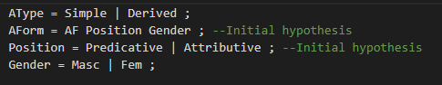
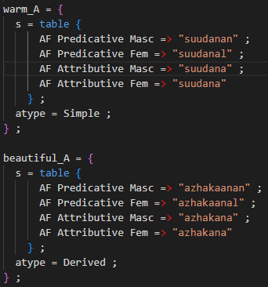
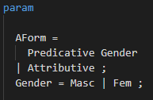
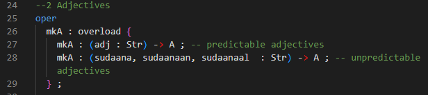
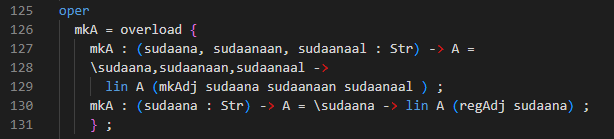
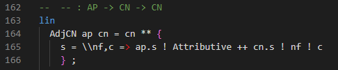
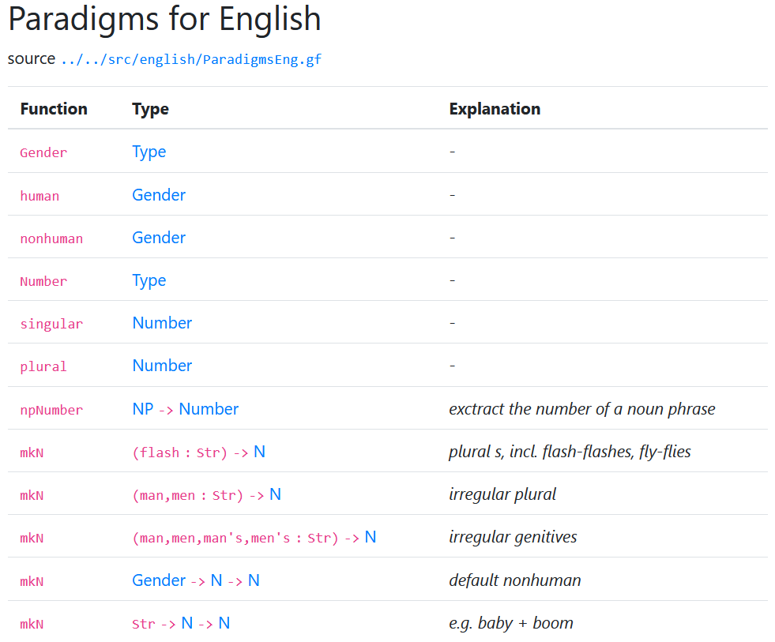

Implementing a Resource Grammar: Stage 2, Making Foods Grammar Grammatical¶
In Implementing a Resource Grammar: Stage 1, A Naive Foods Grammar, we implemented the cats and funs required to implement a naive Foods Grammar that outputs only strings.
In stage 2, we want to build inflection tables. In Tamil, we want to implement the inflection table of 2 forms for adjectives, even though there are more than 2 forms.
Remember, at this stage, we want a minimally implemented grammar that can print out correct sentences
For foods grammar we need to work on Predication (this pizza is warm) and Modification (this warm pizza).
Steps¶
First, we work via an initial hypothesis and refine that down. Again, I will be using Tamil as an example.
Initial Hypothesis:¶
Quicly referring to “A Grammar of Modern Tamil, 1993, Thomas Lehmann”, pages 133 and 134, the grammar shows that there’s a ‘simple’ adjective and a more complex ‘derived’ adjective.
Simple adjectives are adjectives that are not derived from other word categories. In the example below, we use the word “warm”.
Derived adjectives are adjectives derived from other words, like nouns. In the example below, we use the word “beautiful”.
Predicative and Attributive adjectives¶
Attributive adjectives¶
Attributive adjectives modify a noun. For example,
“This warm pizza”.
This is the same in Tamil.
“This warm pizza” (Tamil: Inta sudaana pizza). Inta = This; sudaana = Warm
Predicative adjectives¶
Predicative adjectives are adjectives that describe a noun. For example,
“This pizza is warm”.
In Tamil, we might say,
“This pizza is a warm one” (Tamil: Inta pizza sudaanan). Inta = This; Sudaanan = Warm with 3rd person singular masculine
In Tamil, predicative adjectives have to be pro-nominalised and are placed at the end of the word.
Putting Predicative and Attributive adjectives into GF¶
We write a series of params (in ParamLang.gf) and oper (ResLang.gf).
Param: AType, AForm, Position, Gender
Oper: table of inflection for warm_A and beautiful_A.
We decide based off initial speculation that both predicative and attributive adjectives inflect on gender (Masculine and Feminine).
For this example, we place both param and oper into one file for simplicity sake. Note that the param and oper lines were not captured in this screenshot.
 Modifying the Initial Hypothesis:¶
Notice that Attributive does not inflect on gender.
Now we reduce the number of params down in ParamLang.gf.
We also define the adjective and create a smart paradigm.
This is the first time we define a smart paradigm. If you need an explanation of what a smart paradigm is, refer to Appendix A of this document.
Defining a smart paradigm for Tamil Adjectives¶
To define a smart paradigm, we define two things:
The paradigms for words that follow known rules
The worst-case paradigm for when all other paradigm rules fail
In lines 206-210, we define the adjective as a function from an Adjectival Form (AForm) to a String. Recall that AForm is defined in ParamLang.gf.
In lines 213-219, we define the worst-case scenario. If the word you are defining doesn’t match the other inflection table rules, you can manually define how this word is inflected using this paradigm.
We use a function to define the three types of AForm strings into an adjective. These three strings are the parameters defined in ParamLang.gf. We then define a table that maps the description “Predicative Masc, Predicative Fem, Attributive” to the corresponding strings. The purpose of this function is to put words in the right place in the inflection table.
Note that definition-wise, Lines 213-219 are the same as lines 222-230.
Lines 233-249 creates the inflection table for words ending in “a” in Tamil by adding “an” and “al” to the word. We use Haskell’s “Let and in” way of definiton to populate this paradigm. “Let” allows for the definition of the variables “sudaanaan” and “sudaanaal” to be used “in” “mkAdj”, which populates the table with the non-inflected Attributive form, the Predicative Masculine form, and the Predicative Feminine form.
Exporting the paradigms into the external API¶
ParadigmsLang.gf exports the smart paradigms in ResLang.gf into the external API.
In our example, we go to ParadigmsTam.gf.
Appendix A: Explanation of Smart Paradigms¶
A paradigm is a function from a word to an inflection table.
Note: At this stage, we are creating the inflection table, meaning that we are simply populating the table with the appropriate word forms. This means we are not yet using the inflection table.
Let’s look at what a non-smart, or dumb, paradigm is, using simplified examples from Finnish.
This is an inflection table, using the Finnish word “Koira”
Inflection table 1 that takes words ending in 'a' and outputs an inflection table
Sg Nom => koira
Sg Gen => koiran (Rule: "glues the letter 'n' at the end of the word")
Sg Par => koiraa
Sg Ill => koiraan
And this is another inflection table, using the Finnish word “Hame”.
Inflection table 2 that takes words ending in 'e' and outputs an inflection table
Sg Nom => hame
Sg Gen => hameen (Rule: "Duplicates final vowel and glues the letter 'n' at the end of the word")
Sg Par => hametta
Sg Ill => hameeseen
Do not worry if you don’t know what some of these forms are (e.g. Ill for Illiative). The important points to take note here is that “Hame” ends in ‘e’ and “Koira” ends in ‘a’.
In our simplified example, words that end in ‘a’ take the first inflection table, while words that end in ‘e’ take the second inflection table. “Koira” should not be inflected using inflection table 2, and “Hame” should not be inflected using inflection table 1: The results would be wrong.
However, in a dumb paradigm, you can do just that: You can stick any word that ends in “a” in inflection table 2, and stick any word that ends in “e” in inflection table 1.
Taking the word “Hame” and wrongly sticking it into inflection table 1 gives the wrong output of “Hamen” as the second argument.
This is because the dumb paradigm simply follows the rule “glue the letter ‘n’ to the end of the word” for any input.
A smart paradigm would not allow “Hame” as input into inflection table 1.
Instead, a smart paradigm matches the argument (input) “Hame” with the best matching inflection table.
So in this simplified example, the program would see that “Hame” pattern matches with the rule “Words that end in ‘e’ uses inflection table 2”, and give errors if you try and force “Hame” into inflection table 1.
ParadigmsLang.gf exports the smart paradigms in ResLang.gf into the external API. See Appendix B below for more information on ParadigmsLang.gf
We need a declaration and a definition.
Declaration of the smart paradigm in ParadigmsTam.gf¶
Definition of the smart paradigm in ParadigmsTam.gf¶
Using the smart paradigms¶
We can now use these smart paradigms when we’re creating other categories like Common Nouns (CN) and Adjectival Phrases (AP).
We will be using Record Syntax in these definitions. Record syntax can be used to…
Change a field that already exists in a category
Extend a field via creation that doesn’t exist in a category
Take the following function “AdjCN” as an example, found in NounTam.gf
This function AdjCN takes two arguments ‘AP’ and “CN’ and outputs a ‘CN’.
(As an aside, this type of function is an endofunction as its output is the same as one of its inputs.)
This takes the common noun and uses record syntax to change one of its fields, in this case the ‘s’ (string) field, with a new definition.
For the adjectival phrase argument ‘ap’, we choose, via the exlamation mark ‘!’, the Attributive param. We then
For the common noun, we use the sugared syntax form for a table definition, via two backslashes.
\\nf,c => ...
nf refers to the noun form, and c refers to case.
We then choose the ‘correct’ form via nf and c.
Conclusion¶
This concludes our tutorial on making the Foods Grammar more grammatically correct compared to part 1.
We have explored the use of smart paradigms, record syntax, tables, and overloading.
Appendix B: Note on the structure of ParadigmsLang.gf¶
ParadigmsLang.gf is the only location where we split the declaration of the function and the definition of the function into two different parts of the program.
By convention, declarations are defined above the line ‘–.’, and definitions are defined below the line ‘–.’
Declarations¶
Declarations are automatically turned into the GF documentation in the RGL Synopsis, like the example below.
Focus on the mkN functions. This mkN function is overloaded. The code for these mkN definitions would look something like this:
mkN : overload {
mkN : (flash : Str) -> N ; -- plural s, incl. flashes-flashes, fly-flies
mkN : (man,men : Str) -> N ; -- irregular plural
mkN : (man,men,man's,men's : Str) -> N ; -- irregular genetives
...
}
Notice the following:
Declarations are defined by a colon ‘:’ and start with the function that will be called by the user of the external API, in this case “mkN”. These are the names of the RGL Synopsis, “Function”.
These are then followed by the individual Type definitions, also declared by a colon followed by the Type definitions. This populates the second column of the RGL Synopsis, “Type”.
Finally, the comments that follow the declarations are turned into examples in the third column of the RGL Synopsis, “Example”. Note that comments should have a space after the two dashes that comments begin with (meaning “– example”, which is correct, compared to “–example”, which is wrong.)
Definitions¶
The mkN definitions could look like the following (this doesn’t follow the ParadigmsEng.gf properly, it’s for pedagogical purposes).
mkN = overload {
mkN : (flash : Str) -> N = \flash -> lin N (regN flash) ;
mkN : (man,men : Str) -> N = \man,men ->
lin N (slightlyIrregN man men) ;
mkN : (man,men,man's,men's : Str) -> N = \man,men,man's,men's ->
lin N (totallyIrregN man men man's men's) ;
}
Definitions for the mkN examples above are defined by an equals sign ‘=’ and also start with the function that will be called by the user of the external API, “mkN”.
The overloaded definition is then followed by a declaration-definition pair, where the declaration is the Type definition and the definition that follows the equals sign. The definition is a function from the Types into a linearisation of the output type, in this case, “N”. The arguments use the paradigms defined in ResLang.gf.